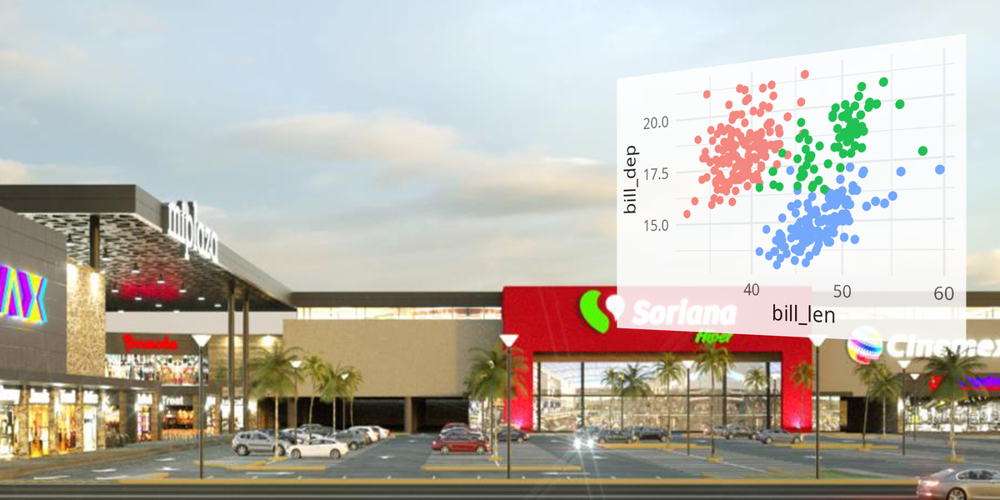

goles <- c(7, 8, 5, 10, 9)
round(mean(goles), digits = 1)Operaciones secuenciales con |>
El operador pipe toma el objeto a la izquierda (LHS) y lo pasa como el primer argumento de la función a la derecha (RHS).
x |> f(y)
es lo mismo que
f(x, y)
¿Cómo escribimos ésto usando |>?
Traduce el siguiente código anidado a una secuencia con pipes:
¿Cuál de estas opciones produce el mismo resultado que sort(unique(c(1, 3, 2, 1, 2)))?
c(1, 3, 2, 1, 2) |> unique() |> sort()unique(c(1, 3, 2, 1, 2)) |> sort()c(1, 3, 2, 1, 2) |> sort() |> unique()Respuesta: d) pero la opción a es la más estándar
Tenemos este vector de nombres:
¿Qué devuelve esta secuencia en cada paso y al final?
rev(): “carlos”, “bea”, “ana”head(n = 1): “carlos”toupper(): “CARLOS”Usando |> y funciones base, crea una secuencia que:
sum()).sqrt()).ya podemos:
|>.El pipe nativo permite usar el marcador _ para pasar el resultado a un argumento que no sea el primero.
overlayEl paquete overlay sirve para combinar imágenes, gráficos o código sobre un fondo.
Podemos agregar múltiples capas usando el marcador de posición _ :
¿Por qué _?
Porque en la segunda llamada, el resultado del primer paso (la imagen ya compuesta) debe entrar en el argumento background, no en el primero (overlay).
library(ggplot2)
library(overlay)
# Creamos un gráfico
p_penguins <- ggplot(penguins, aes(bill_len, bill_dep, color = species)) +
geom_point() +
theme_minimal() +
theme(legend.position = "none")
# Combinamos con el fondo usando pipes
p_penguins |>
hud_overlay(background = "../archivos-ej/sor.jpg",
size = "medium", tilt="right",
placement = "top-right")